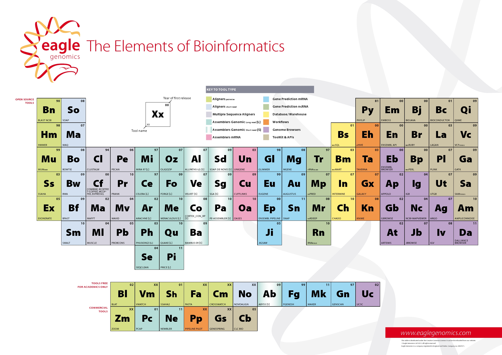

Please cite the table using doi:10.6084/m9.figshare.726124
What's new?
In this release (version 4, September 2013), we have introduced:
- DOIs for all tools, and a DOI for the table itself.
- ImpactStory data for all tools with DOIs.
- More than 50 additional tools, and a bunch of corrections to existing ones.
- Clearer visual clues for the newly added tools.
- Close the dialog popups by pressing Escape.
- All links to tool homepages now open in new tabs.
- A link to the XML containing all the underlying data.
What is it for?
Eagle's Elements of Bioinformatics brings together all the tools in each category of bioinformatics software so that end-users can find all the information in one place.
For example, someone looking for an aligner might use the table to review the options available before making the choice most appropriate to their project. Someone already using an aligner but having problems with it might use the table to identify suitable alternatives.
The original version of the table had only genomics and sequence bioinformatics tools, but we are steadily expanding it to cover other areas such as proteomics, biostatistics, metabolomics, etc. Suggestions for additional tools and categories are most welcome.
There is a link at the bottom of the table to allow users to suggest additional tools, propose corrections, or provide feedback. You can also tweet your ideas to @eaglegen hashtag #egelements.
How does it work?
The table divides all tools into categories by function and licence. The function groupings are colour-coded, and the licence groupings are represented by separation into dedicated areas. We don't list each individual licence, but instead allocate a general category of licence to each tool - completely free, free for academics only, or commercial/restricted.
The categories are listed at the top. Hover over a category to highlight all tools that fall into it.
Each tool can be hovered over to bring up more information including, where available, and a link to the tool's homepage (click on the two-letter abbreviation to be taken there).
ImpactStory
We are grateful to ImpactStory for providing a free key to embed their DOI-derived data. However please note that all ImpactStory content is external to Eagle and is not under our control. If an entry in the table looks like it doesn't have the correct impact data, please contact ImpactStory directly.